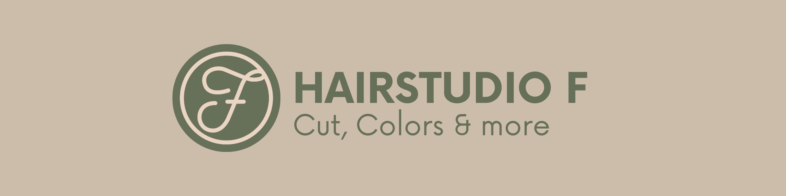

Cut, Colors
& more.
Hairstudio F in Fehraltorf. Schnitt, Farbe und mehr an der Bahnhofstrasse 12.
Was passt
zu Ihnen?
Cut
Waschen, schneiden, föhnen
Colors
Färben, tönen und Mèches
More
Dauerwelle, Augenbrauen und Wimpern
F wie
Fehraltorf.
Fiorina Provenzano begrüsst Sie im Hairstudio F. Der Salon ist rollstuhlgängig und ein Kundenparkplatz befindet sich vor dem Haus.
Bis bald.
Bahnhofstrasse 128320 Fehraltorf
Ferienhinweis der Website: 24. bis und mit 26. September 2026; ab 28. September wieder da.
044 955 12 12